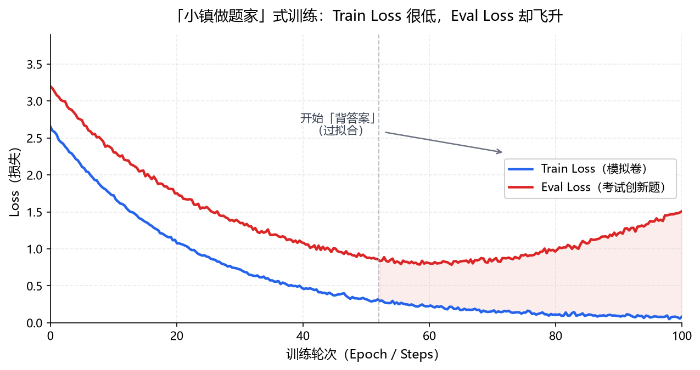

写在前面：这些技术博客主要是依照我的个人理解所写，希望能帮助到你。
经过《AI 伦理篇》的论述，应该对 AI 的能力边界和技术带来的风险有了认知。这次《机制篇》则真正踏入 AI 大模型的底层领域——让我们从机制出发，搞懂 AI「为什么会这么做」。
一、AI 算法模块的组成
LLM"]:::core --> D["输出结果"]:::io --> E["损失计算"]:::io --> F["参数更新"]:::io classDef io fill:#dbeafe,stroke:#2563eb,stroke-width:1.5px,color:#1e3a8a; classDef core fill:#dcfce7,stroke:#16a34a,stroke-width:2.5px,color:#14532d;
每个环节分别负责：
- 输入数据——我们人类提供给 AI 的训练资料
- 特征表示——将训练资料转换为模型可以计算的形式
- 大模型——提取规律并预测
- 输出结果——分类并生成判断
- 损失计算——衡量答案对与否
- 参数更新——根据误差去修正模型
举个例子：我们是一群小学生（没训练的 AI），这时候来了个美国外教教我们数学。首先外教发给我们一人一本数学练习册去学习知识点（输入数据），随后外教开始给我们讲题。可是我们都是中国人，听不懂英语怎么办？这时候一旁的翻译把老师的话翻译给我们听（特征表示）。听完之后，我们似懂非懂，打算先根据自己的理解做做题（大模型）。时间一到，老师收走我们做完的题目（输出结果），随后开始批改（损失计算）。最后，外教给我们讲解了错题，我们进行了改错（参数更新）。这个时候，这道题的正确解法就刻在我们的脑子里啦。
二、「参数更新」与训练方法
先做一遍题"]:::io --> B["计算误差
对照答案批改"]:::io --> C["反向调整
总结错题并内化"]:::io --> D["重复迭代
如此往复"]:::core D -.->|循环回去| A classDef io fill:#dbeafe,stroke:#2563eb,stroke-width:1.5px,color:#1e3a8a; classDef core fill:#ffedd5,stroke:#ea580c,stroke-width:2.5px,color:#7c2d12;
依旧是原来的例子，只不过没有了老师的帮助，全部依靠自己（大模型 LLM）去学习迭代。自学的过程中，我们会先根据自己的知识储备把题做一遍（前向计算），做完后对照答案批改（计算误差），接着总结错题并把知识内化（反向调整），如此往复（重复迭代）。
为什么不一开始就给 AI 看答案？
当时在教学弟的时候，他提出了一个很有意思的问题：「为什么不一开始给 AI 看答案呢？这样不会训练得更快吗？」
这个问题引出了 Transformer 架构里 Decoder-only 和 Encoder-only 的概念，以及「过拟合」的概念。这里简单概述：Decoder-only 只能看前面的词来猜测下一个内容；Encoder-only 则能够看到前后的词，来做「选词填空」。
我们可以把 AI 比喻成一个高中生：当 AI 做题的时候，旁边如果放了一本答案，AI 其实会自欺欺人——偷偷翻开答案看两眼，然后假装自己会了。模拟卷写得很好（Train Loss 很低），但面对考试的创新题就直接歇菜（Eval Loss 很高）。这样的训练方式会让 AI 变成一个「小镇做题家」。

所以，训练 AI 时通常采用 Decoder-only 的方式，让模型真正「靠自己」学会预测下一个词，以达到预期效果。
三、文本传入大模型流程
当我们和 LLM 聊天的时候，是否好奇过：「文本发出到 LLM 给出答案，这个过程是怎样的？」
今天天气真好"]:::io --> B["Tokenization
今天/天气/真好"]:::io --> C["Token Embedding
词嵌入"]:::io --> D["LLM 计算"]:::core --> E["生成 Token"]:::io --> F["还原自然语言"]:::result classDef io fill:#dbeafe,stroke:#2563eb,stroke-width:1.5px,color:#1e3a8a; classDef core fill:#dcfce7,stroke:#16a34a,stroke-width:2.5px,color:#14532d; classDef result fill:#ffedd5,stroke:#ea580c,stroke-width:2.5px,color:#7c2d12;
文本输入很好理解，那后面几个流程该如何理解呢？依旧举个例子。当我输入「今天天气真好」：
- Tokenization 会把句子切成一块一块的，如：今天 / 天气 / 真好
- 这时候的「词块」大模型看不懂，需要 Token Embedding 把它转换成模型能理解的语言（词嵌入）
- 随后交给 大模型计算
- 大模型算完生成的东西（Token）我们人类看不懂，需要再还原成自然语言，答案才会出现在聊天框里
整个过程就像两个人中间隔了两个翻译：你说的话要先「翻译成 AI 的话」，AI 回的话再「翻译回人话」——只不过这两位翻译的效率极高，你感觉不到他们的存在。
写在最后
伦理篇回答的是「AI 不该做什么」，机制篇回答的是「AI 为什么会这么做」。知道它怎么学、怎么想、怎么答，才谈得上真正地用好它、管住它。